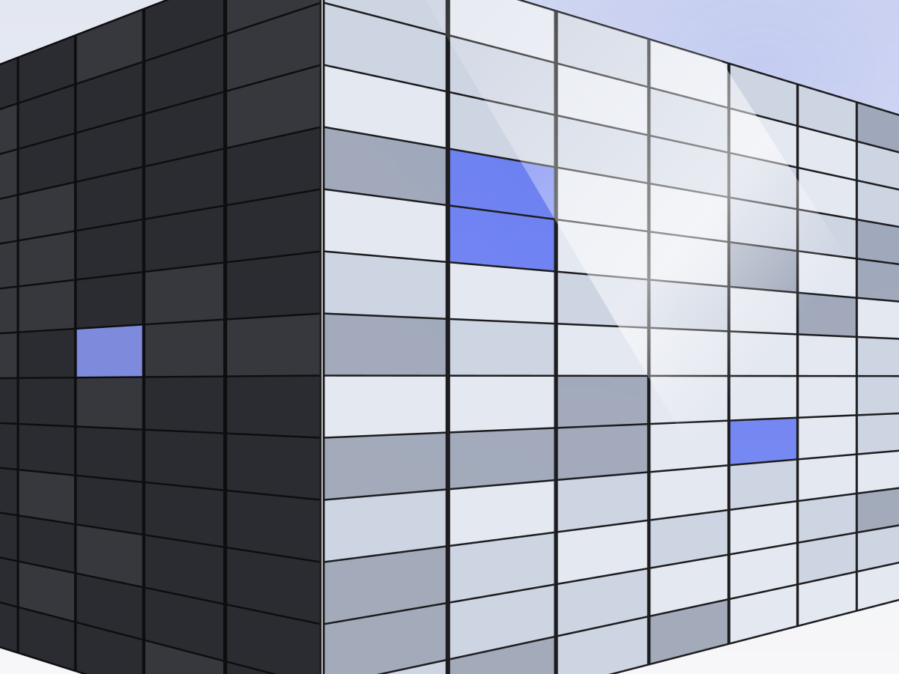

NIS2: koho se týká a od kdy platí
Evropská směrnice NIS2 výrazně rozšířila okruh firem, které musí řešit kybernetickou bezpečnost jako zákonnou povinnost. Mnoho z nich o tom přitom zatím neví. V článku najdete, podle čeho zjistíte, jestli se povinnosti týkají i vás, a co dělat jako první.

Co je NIS2
NIS2 je evropská směrnice (EU) 2022/2555 o kybernetické bezpečnosti, která nahradila původní směrnici NIS. Členské státy ji převádějí do svých zákonů. V Česku ji provádí zákon č. 264/2025 Sb., o kybernetické bezpečnosti, který nahradil dřívější zákon č. 181/2014 Sb. Podrobnosti upravují vyhlášky NÚKIB, především vyhláška č. 408/2025 Sb. o regulovaných službách a vyhlášky č. 409/2025 Sb. a č. 410/2025 Sb. o bezpečnostních opatřeních.
Hlavní změna oproti dřívějšku: povinnosti se už netýkají jen několika stovek provozovatelů kritické infrastruktury. Pod regulaci spadají tisíce středních a velkých firem z mnoha odvětví, a s nimi i řada obcí a veřejných institucí.
Koho se povinnosti týkají
Zda je vaše firma tzv. povinnou osobou, se posuzuje podle několika kritérií zároveň. Zjednodušeně jde o tři otázky:
- V jakém odvětví podnikáte. Zákon vyjmenovává 15 odvětví: veřejná správa, energetika, výrobní průmysl, potravinářský průmysl, chemický průmysl, vodní hospodářství, odpadové hospodářství, doprava, digitální infrastruktura a služby, finanční trh, zdravotnictví, věda, výzkum a vzdělávání, poštovní a kurýrní služby, obranný průmysl a vesmírný průmysl (§ 4 zákona). Konkrétní regulované služby v nich vymezuje příloha vyhlášky č. 408/2025 Sb.
- Jak je firma velká. Zákon se týká středních a velkých podniků podle doporučení Evropské komise 2003/361/ES. Malý podnik má méně než 50 zaměstnanců a jeho roční obrat nebo bilanční suma nepřesahuje 10 milionů eur. Kdo má 50 a více zaměstnanců, nebo obrat i bilanční sumu nad 10 milionů eur, je už středním podnikem.
- Jaký je váš význam pro fungování státu nebo trhu. Některé subjekty spadají pod regulaci bez ohledu na velikost, například jediný poskytovatel dané služby v Česku, poskytovatel služby, jejíž narušení by zasáhlo více než 125 000 osob, nebo subjekt kritické infrastruktury (§ 5 zákona).
Podle výsledku se firma zařadí do režimu vyšších, nebo nižších povinností (§ 8 zákona). Do vyššího režimu patří poskytovatelé, kteří jsou pro Česko značně ekonomicky, společensky nebo bezpečnostně významní, ostatní spadají do nižšího. Konkrétní rozdělení služeb do režimů stanoví vyhláška č. 408/2025 Sb. Bezpečnostní opatření pro vyšší režim upravuje vyhláška č. 409/2025 Sb., pro nižší režim vyhláška č. 410/2025 Sb.
Od kdy povinnosti platí
Pro firmu jsou důležitá tato data a lhůty:
- Účinnost zákona: 1. listopadu 2025. Ve stejný den nabyly účinnosti i prováděcí vyhlášky.
- Ohlášení regulované služby: do 60 dnů ode dne, kdy firma začala splňovat podmínky (§ 6 zákona). Kdo je splňoval už 1. listopadu 2025, měl lhůtu do 31. prosince 2025.
- Kontaktní údaje: do 30 dnů od doručení rozhodnutí NÚKIB o registraci služby (§ 11 zákona).
- Bezpečnostní opatření a hlášení incidentů: nejpozději do 1 roku od doručení rozhodnutí o registraci (§ 13 a § 15 zákona).
Lhůta pro ohlášení běží od chvíle, kdy firma podmínky splní, ne od chvíle, kdy ji na to někdo upozorní. Neohlášení služby je přestupek, za který hrozí vysoká pokuta. Pokud jste lhůtu propásli, ohlaste službu co nejdřív.
Jak zjistit, jestli se to týká vás
Nejrychlejší cesta je předběžné posouzení pomocí kalkulačky na Portálu NÚKIB (Národní úřad pro kybernetickou a informační bezpečnost). Přes stejný portál se regulovaná služba i ohlašuje. Výsledek kalkulačky je orientační a o registraci rozhoduje NÚKIB. Pokud vám vyjde, že regulovaní nejste, uložte si záznam o tom, jak jste postupovali.
Připravte si předem:
- přesný popis činností, které firma vykonává (nejen hlavní obor podle živnostenského listu),
- počet zaměstnanců, obrat a bilanční sumu za poslední účetní období,
- informace o propojených a partnerských podnicích, protože se jejich údaje mohou sčítat.
Pokud si výsledkem nejste jistí, nechte ho posoudit právníkem. Chybné zařazení se nevyplácí ani jedním směrem.
Týká se vás to, i když povinnou osobou nejste
I firma mimo regulaci často pocítí NIS2 nepřímo. Povinné osoby musí řídit rizika svých dodavatelů, a tak od nich začínají vyžadovat doklady o zabezpečení: smluvní závazky, dotazníky, potvrzení o školení zaměstnanců. Kdo je nedoloží, může o zakázku přijít.
Co udělat hned teď
- Projděte samoposouzení a výsledek si uložte.
- Určete člověka, který bude za kybernetickou bezpečnost ve firmě odpovídat.
- Zmapujte, jaké systémy a data firma používá a co by se stalo, kdyby nefungovaly.
- Naplánujte školení zaměstnanců i vedení. Je to jedna z povinností, kterou lze vyřešit rychle a doložit.
Zdroje
- Zákon č. 264/2025 Sb., o kybernetické bezpečnosti
- Vyhláška č. 408/2025 Sb., o regulovaných službách
- Vyhláška č. 409/2025 Sb. (bezpečnostní opatření, režim vyšších povinností)
- Vyhláška č. 410/2025 Sb. (bezpečnostní opatření, režim nižších povinností)
- Směrnice (EU) 2022/2555 (NIS2)
- Portál NÚKIB
Právní stav k 16. října 2026. Článek je obecná informace, nenahrazuje právní poradenství k vaší konkrétní situaci.